Learning About Probabilities and Related ML Methods
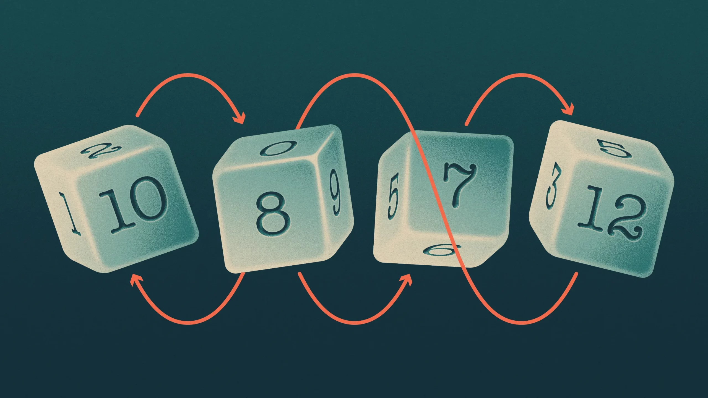
Kristina Armitage/Quanta Magazine
In this blog we will be discussing Naive Bayes and Logistic Regression. The reason for such a selection of topics is the comonality that both of these algorithms share. Both of these algorithms are probabilistic classifiers. This means that both of these methods can output not only their prediction for an outcome, but also the probability of the outcome. We will see the math behind how these models go about doing it as we progress through the blog. First, we should discuss the data.
Diabetes Dataset
The current version of the diabetes dataset was taken from kaggle. However, it is only a subset of the full dataset owned by the National Institute of Diabetes and Digestive and Kidney Diseases. This particular subset deals with specifically with women over the age of 21 of the Pima Indian heritage. The dataset contains the following columns:
Pregnancies - the number of pregnancies the woman has gone through.
Glucose - Glucose level.
BloodPressure - Diastolic blood pressure in mm Hg.
SkinThickness - Triceps skin fold thickness in mm
Insulin - 2-Hour serum insulin test result in mu U/ml
BMI - Body mass index
DiabetesPedigreeFunction - Diabetes pedigree function
Age - The age
Outcome - Outcome where 1 indicates a positive test result.
As usual, we will be loading the dataset through pandas.
import pandas as pddata = pd.read_csv('diabetes.csv')data.head()
Pregnancies
Glucose
BloodPressure
SkinThickness
Insulin
BMI
DiabetesPedigreeFunction
Age
Outcome
0
6
148
72
35
0
33.6
0.627
50
1
1
1
85
66
29
0
26.6
0.351
31
0
2
8
183
64
0
0
23.3
0.672
32
1
3
1
89
66
23
94
28.1
0.167
21
0
4
0
137
40
35
168
43.1
2.288
33
1
Let’s take a quick look at the dataset information to undestand the column compostion.
Every single column in the dataset is numeric. Let us take a look at the distribution of the data in each column.
import matplotlib.pyplot as pltimport seaborn as snssns.color_palette("rocket", as_cmap=True)for col in data.columns: fig, (ax1, ax2) = plt.subplots(ncols=2, figsize=(15,7)) ax1.boxplot(data[col]) sns.kdeplot(data[col], ax=ax2) plt.title(col)plt.show()
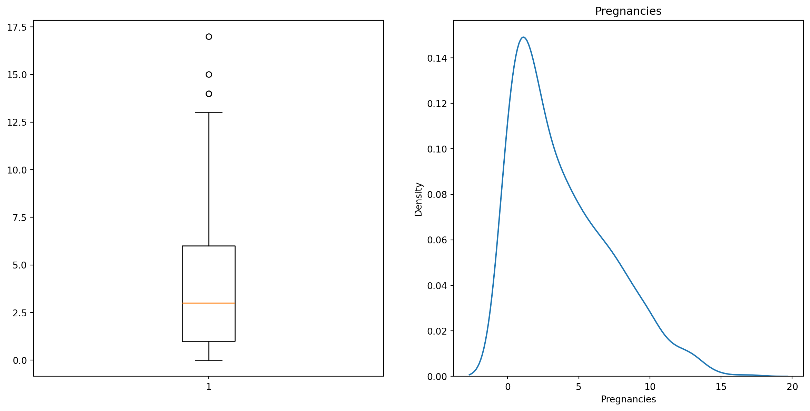
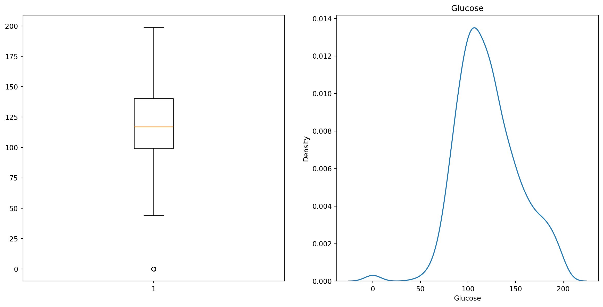
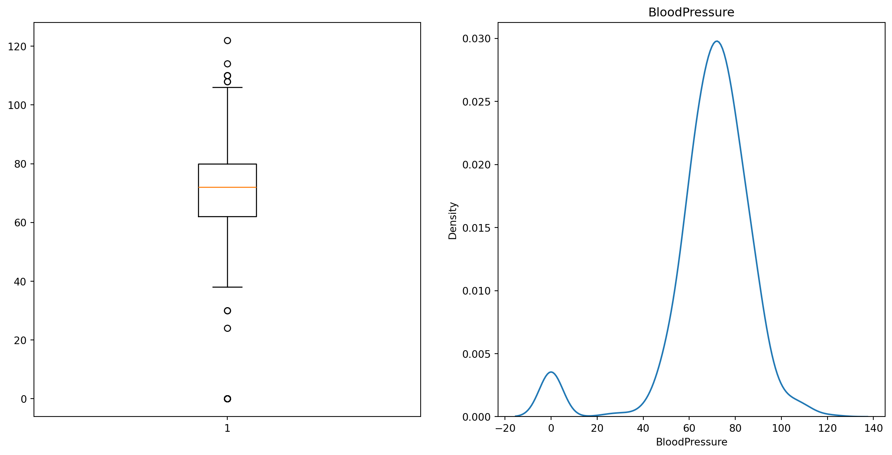
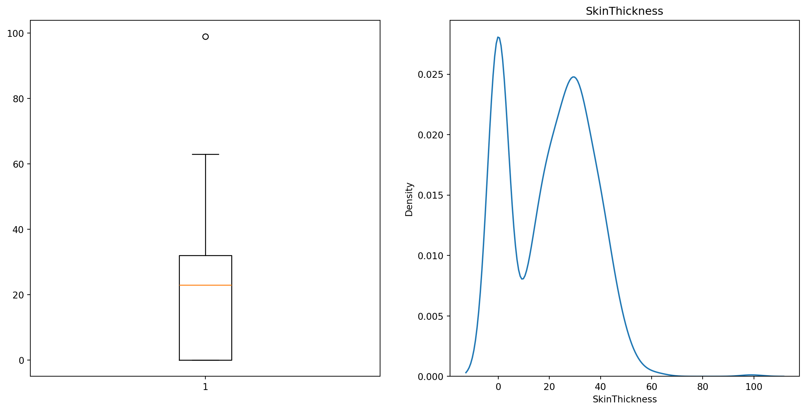
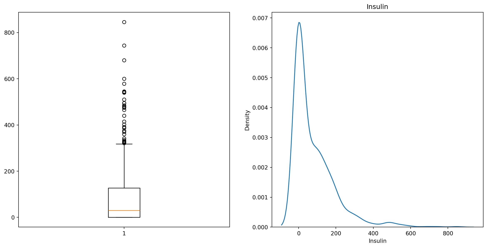
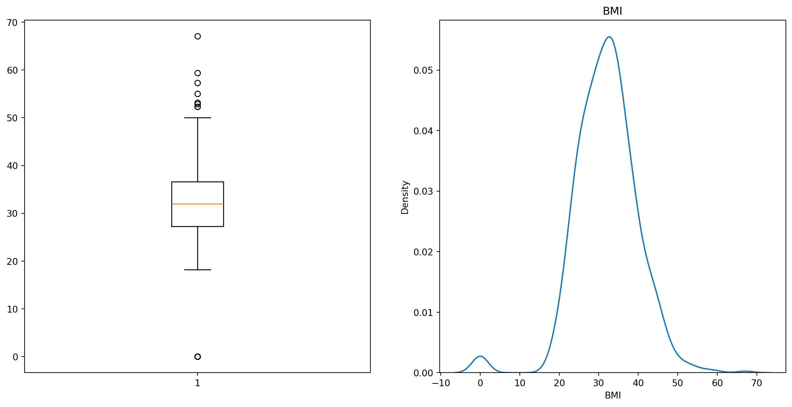
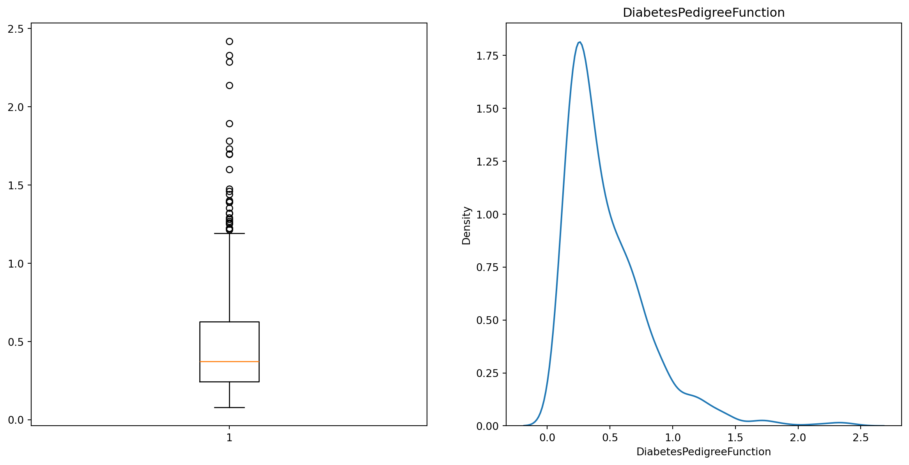
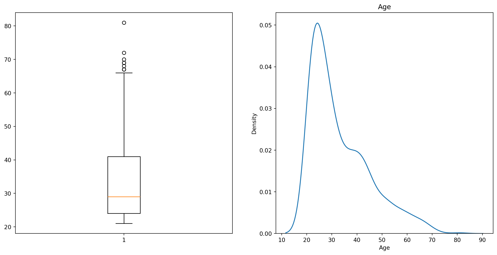
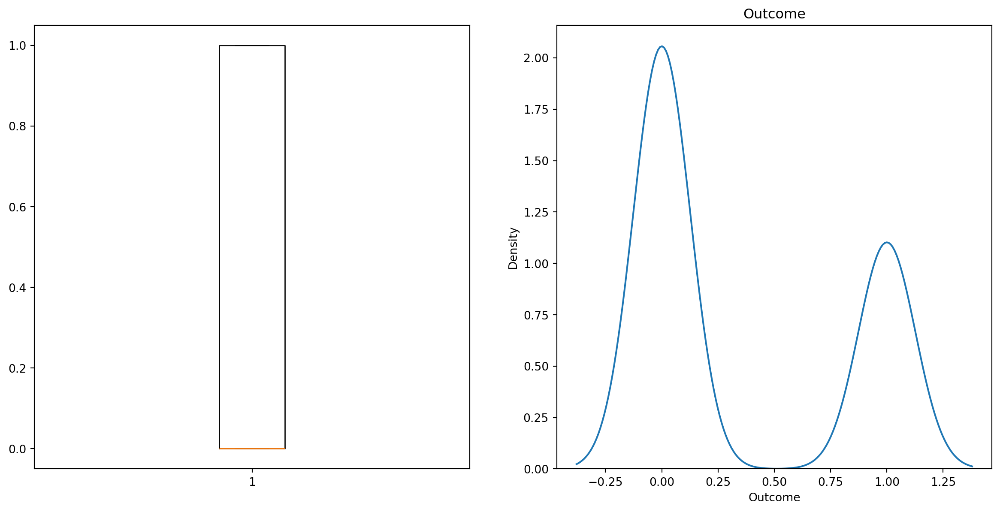
We can see that certain values here were imputed as some of the values can never be equal to 0 in the real world. For example, neither BMI or blood preassure can be equal to 0, yet we do see some values in the columns that are equal to 0. We could impute these values using a mean, median, or perhaps even KNN-imputer in order to try and improve the performance of the model. Yet surprisingly, when I tried to do so, the models performed worse when I tried to impute these value. So, they will stay as they are. Next, we will look at the distributions of the data per outcome.
for col in data.columns:if col =="Outcome":continue fig, (ax1, ax2) = plt.subplots(ncols=2, figsize=(15,7)) positives = data["Outcome"] ==1 negatives = data["Outcome"] ==0 ax1.boxplot(data[col].loc[positives], positions=[1]) ax1.boxplot(data[col].loc[negatives], positions=[2]) ax1.set_xticklabels(["Positive", "Negative"]) ax1.set_title(f"{col} Boxplot") sns.kdeplot(data[col].loc[positives], ax=ax2, label="Positive") sns.kdeplot(data[col].loc[negatives], ax=ax2, label="Negative") plt.legend(loc="best") plt.title(f"{col} KDE")plt.show()
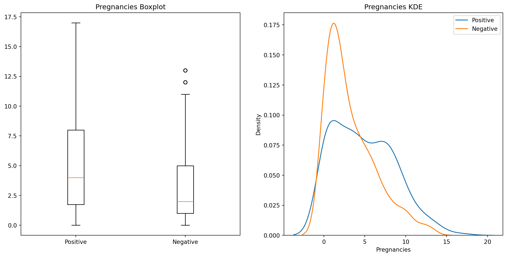
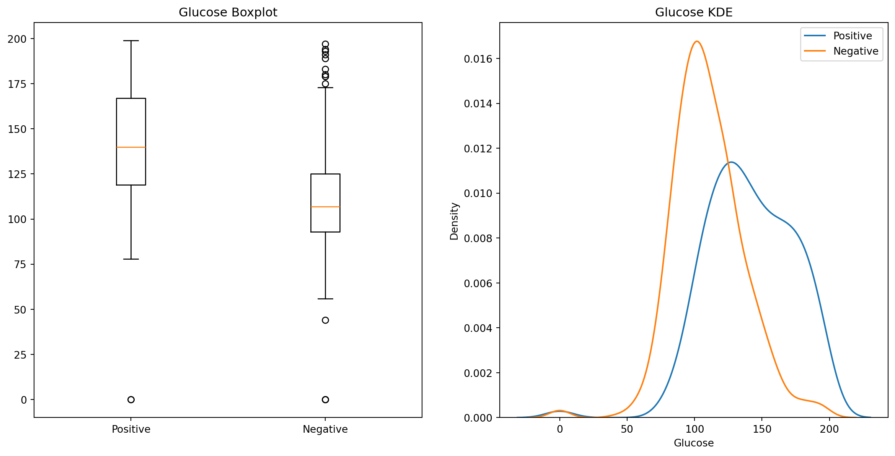
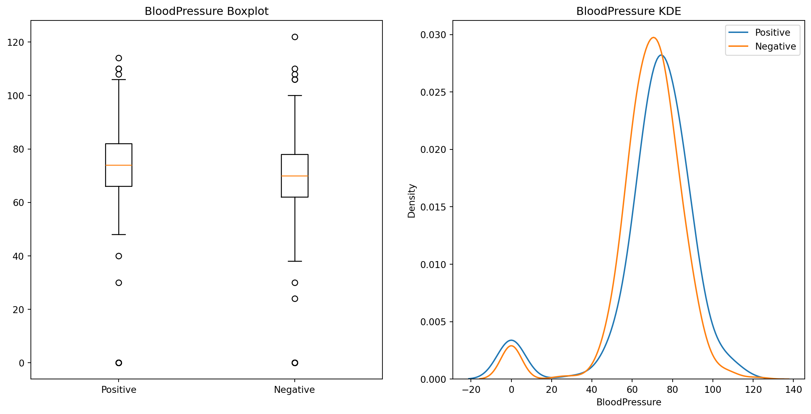
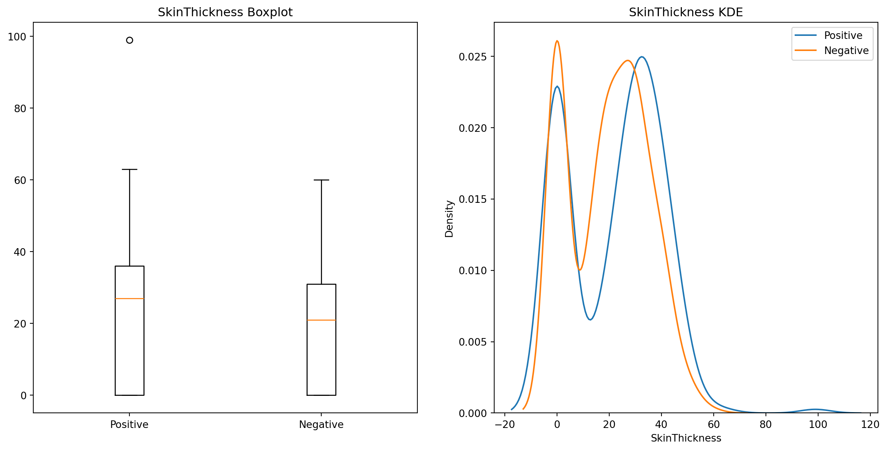
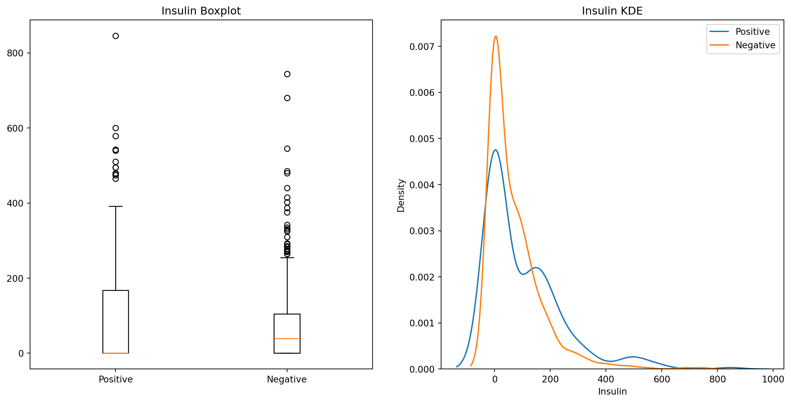
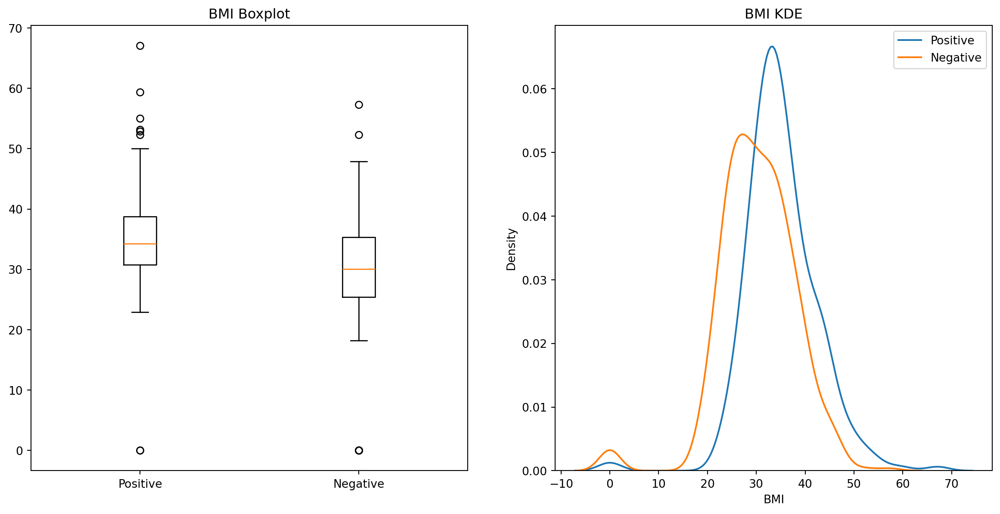
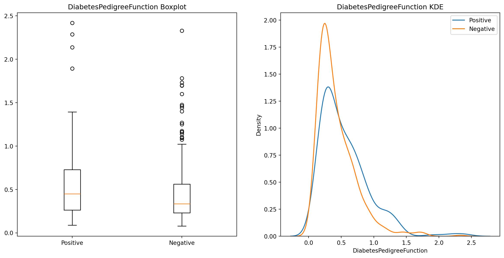
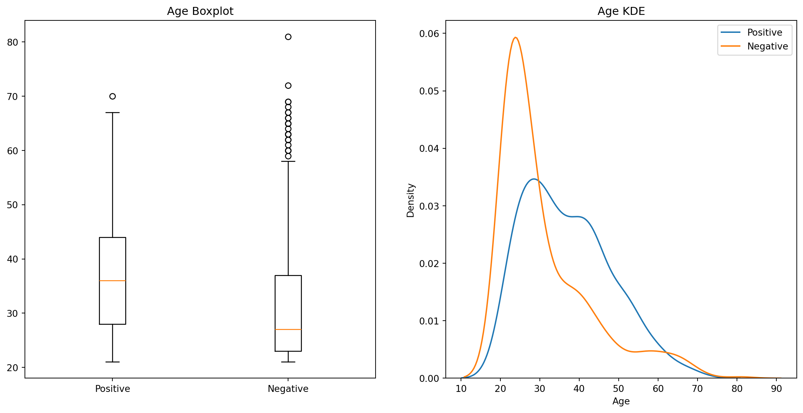
Inrestingly, the distributions for both the blood pressure and skin thickness appear to be very similar to each other regardless of the outcome. We could experiment and try to remove these variables from the model down the line and see if we are able to achieve better performance. For now, let’s check if we can spot anything interesting happening when we project the data into 2 dimensions.
Unfortunatley, the difference between the two distributions is a bit difficult to spot in these two dimension.
Training Naive Bayes
We will now proceed to train and test the naive bayes model. As usual, we should split the data into train and test sets.
from sklearn.model_selection import train_test_splitX_train, X_test, y_train, y_test = train_test_split(X, y, test_size=0.2, random_state=42)
Alright, now let us train the model, but first - some theory.
As mentioned above, naive bayes is a probabilistic classifier, so it should be able to output the probabilities of each outcome along with its prediction.
It does so by computing \(P(Y | X)\) where \(Y\) represents the classified variable and X represents the feature variables. According to Bayes theorem (that’s where the method get’s its name): \[
P(Y | X) = \frac{P(X | Y) P(Y)}{P(X)}
\] Although this equation looks simple, it becomes very difficult to compute as \(X\) grows larger. This is because we have to calculate \(P(X | Y)\). For example, assume X consists of two features \(X_1\) and \(X_2\). Then, we have to calculate \[
P(Y | X_1, X_2) = \frac{P(X_1, X_2 | Y) P(Y)}{P(X_1, X_2)}
\] So, now we need data where all the three variables (\(X_1\), \(X_2\), \(Y\)) interact. However, naive bayes makes a very crucial assumption. It assumes that the variables are independent. Thus, our equation is simplified to \[
P(Y | X_1, X_2) = P(X_1 | Y) P(X_2 | Y)
\] Now, we no longer need the data on how \(X_1\) and \(X_2\) interact with each other and only need to know how they interact with \(Y\). This means that we need significantly less data and the computation becomes much cheaper.
You may be concerned that the assumption of independnce is flawed since variables in most data are going to have some degree of dependence on each other. That is a good concern to have. However, naive bayes generally tends to perform well even when that assumption is violated.
So, when given observations \(X_1, X_2, ..., X_n\), naive baise calculates the probabilities for all the possible outcomes \(Y\) and then selects the outcome with the highest probability. This is how we both get a probability estimate and a prediction.
Accuracy: 0.7662337662337663
F1 score: 0.6842105263157895
We can see that the model struggles a little most likely due to the inbalance in the data. However, this is a fairly good performance for such a simple model. Now, let’s look how we can attein the prediction probabilities. We will work with a single sample, but the approach can also be applied to multiple samples.
/Users/danielsabanov/.pyenv/versions/3.11.6/lib/python3.11/site-packages/sklearn/base.py:465: UserWarning: X does not have valid feature names, but GaussianNB was fitted with feature names
warnings.warn(
array([0.73024358, 0.26975642])
Since the largest probability is 0.73 and corresponds to the first class, we know that our prediction is “0”. Thus, this specific patient is predicted to not have diabetes. Let’s see what was the true outcome.
y_test.iloc[0]
0
And that checks out!
Examining Possible Improvements
Remember the assumption that naive bayes makes? Well, so far we do not know if the assumption was violated. Even though naive bayes tends to perform well even when its assumptions are violated we may be able to improve performance if we reduce the number of correlated variables. We should take a look at the correlation matrix.
sns.heatmap(X_train.corr(), annot=True)
<Axes: >
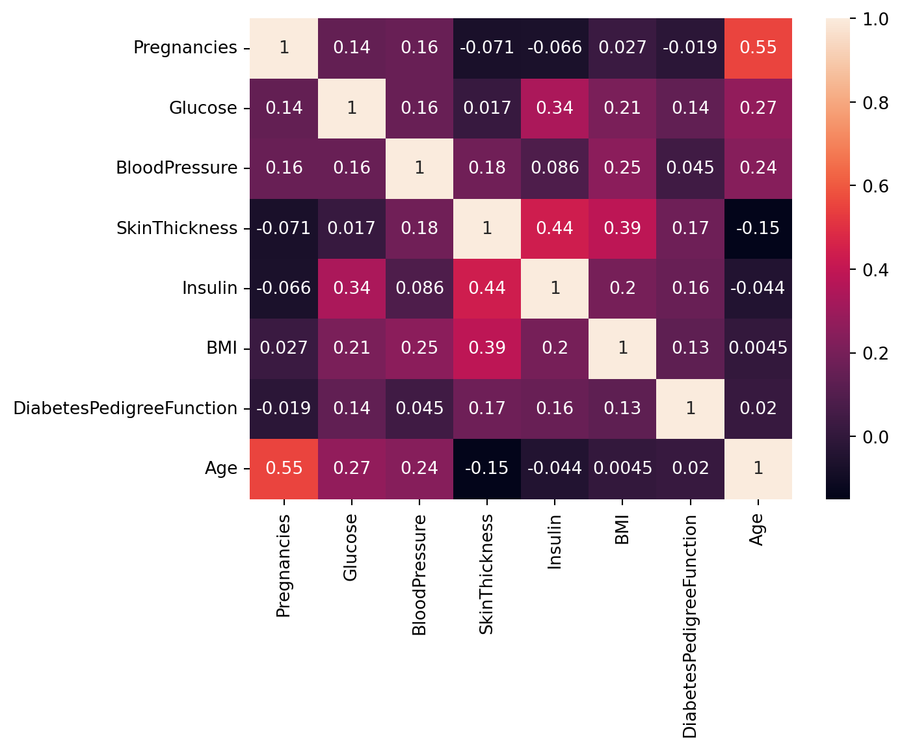
It looks like the number of pregnancies is correlated with age, which makes sense. Additionally we can see that there is a correlation between skin thickness and BMI. We could try to remove these variables from the equation and see how the model performs.
Accuracy: 0.7792207792207793
F1 score: 0.679245283018868
It looks like we were not able to improve the predictive power of the model since even though our accuracy went up our f1 score dropped. This is because we now have more false negatives. Never the less, we were able to reduce the number of variables that we are working with, while maintaining most of the predictive power of the model. However, if we have access to these variables, they should probably still kept within the model.
Next, we will be examining a different type of model, that also relies on probability.
Training Logistic Regression
Similarly to naive bayes, logistic regression is also capable to predict the probabilities of its predictions. Let’s examine the math behind it.
We know that the linear regression equaiton is given by: \[
y = \beta_0 + \beta_1 x_1 + ... + \beta_n x_n
\]
However, instead of trying to predict \(y\) directly. We will be trying to predict the log odds of a class. So, we have: \[
\log(odds) = \beta_0 + \beta_1 x_1 + ... + \beta_n x_n
\]
We know that probability can be predicted using odds with the following equation: \[
p = \frac{odds}{1 + odds}
\]
We can substitute that into our equaiton, but before we do we first need to find the odds equation. So we exponentiate the function. \[
odds = e^{\beta_0 + \beta_1 x_1 + ... + \beta_n x_n}
\]
Now we substitute that into our probability function.
\[
p = \frac{e^{\beta_0 + \beta_1 x_1 + ... + \beta_n x_n}}{1 + e^{\beta_0 + \beta_1 x_1 + ... + \beta_n x_n}}
\] We can simplify the equation by dividing by the odds function. We end up with. \[
p = \frac{1}{1 + e^{-(\beta_0 + \beta_1 x_1 + ... + \beta_n x_n)}}
\]
Now, we have an equation that can predict a probability of a specific class given \(X\).
Training the model is very easy with scikit-learn.
Accuracy: 0.7467532467532467
F1 score: 0.6548672566371682
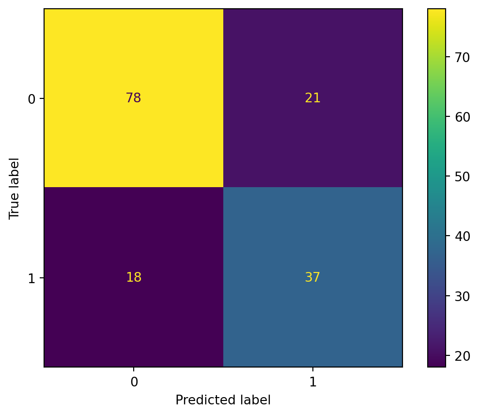
We can see that the model was able to perform very similarly to the naive bayes model.
Trying to Improve Performance
Logistic regression assumest that there is no multicollinearity in the data. That means no variable can be linearly related to other variables. We already know we have some variables that are somewhat related to each other. Let’s see how the model performs when we drop the related columns.
Accuracy: 0.7597402597402597
F1 score: 0.6542056074766355
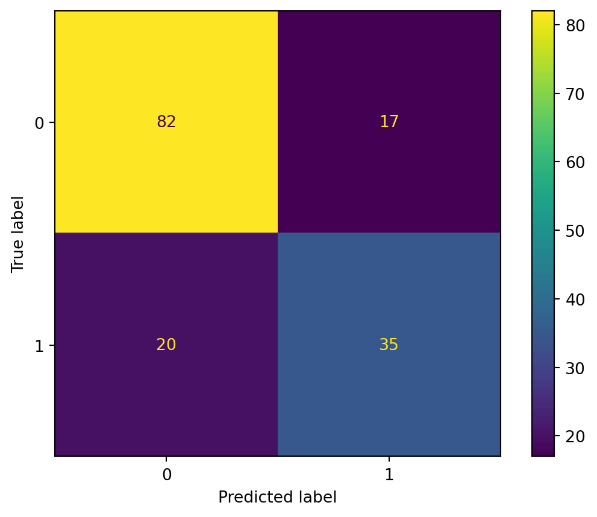
In this case there was no significant impact on the performance of the model. Yet, we were still able to reduce the amount of data that the model requires for training. However, if this model was to be used in the real world, I would recommend keeping the variables as our model sensitivite has decreased. It is much better to have a false positive in a medical setting than a false negative since we rist patients going without treatment.